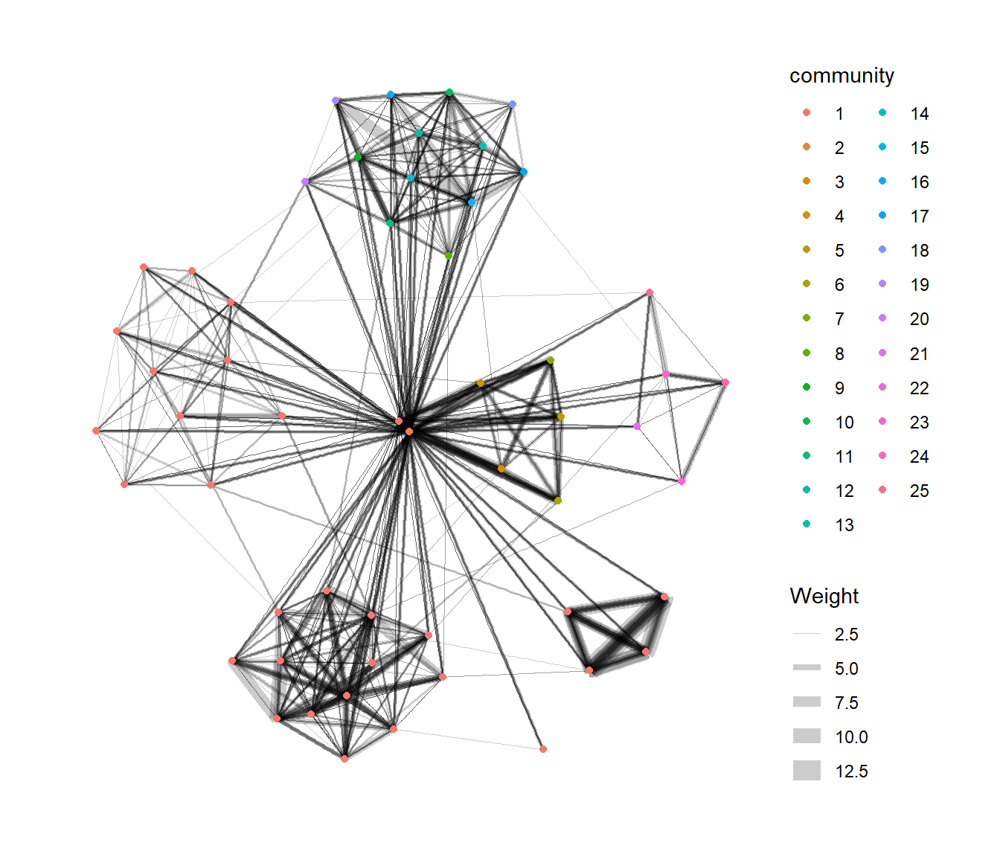

pacman::p_load(igraph, tidygraph, ggraph,
visNetwork, lubridate, clock,
tidyverse, graphlayouts,
concaveman, ggforce)Hands-on Exercise 5
dplyr
lubridate
tidygraph
Modelling, Visualising and Analysing Network Data with R
Overview
By the end of this hands-on exercise, you will be able to:
create graph object data frames, manipulate them using appropriate functions of dplyr, lubridate, and tidygraph
build network graph visualisation using appropriate functions of ggraph
compute network geometrics using tidygraph
build advanced graph visualisation by incorporating the network geometrics
build interactive network visualisation using visNetwork package
Getting Started
Installing and launching R packages
The code chunk:
The Data
The data sets used in this hands-on exercise is from an oil exploration and extraction company. There are two data sets. One contains the nodes data and the other contains the edges (also know as link) data.
Import Data
In this step, you will import GAStech_email_node.csv and GAStech_email_edges-v2.csv into RStudio environment by using read_csv() of readr package.
GAStech_nodes <- read_csv("GAStech_email_node.csv")
GAStech_edges <- read_csv("GAStech_email_edge-v2.csv")Reviewing the imported data
glimpse(GAStech_edges)Rows: 9,063
Columns: 8
$ source <dbl> 43, 43, 44, 44, 44, 44, 44, 44, 44, 44, 44, 44, 26, 26, 26…
$ target <dbl> 41, 40, 51, 52, 53, 45, 44, 46, 48, 49, 47, 54, 27, 28, 29…
$ SentDate <chr> "6/1/2014", "6/1/2014", "6/1/2014", "6/1/2014", "6/1/2014"…
$ SentTime <time> 08:39:00, 08:39:00, 08:58:00, 08:58:00, 08:58:00, 08:58:0…
$ Subject <chr> "GT-SeismicProcessorPro Bug Report", "GT-SeismicProcessorP…
$ MainSubject <chr> "Work related", "Work related", "Work related", "Work rela…
$ sourceLabel <chr> "Sven.Flecha", "Sven.Flecha", "Kanon.Herrero", "Kanon.Herr…
$ targetLabel <chr> "Isak.Baza", "Lucas.Alcazar", "Felix.Resumir", "Hideki.Coc…Wrangling time
The code chunk below will be used to perform the changes:
dmy() transforms the SentDate to Date data type.
wday() returns the day of the week as a decimal number by default
label=TRUE: returns the character version of the ordered labels instead of numbers
abbr=TRUE: returns the abbreviated label (e.g., MON, TUE)
the values in the Weekday field are in ordinal scale.
GAStech_edges <- GAStech_edges %>%
mutate(SendDate = dmy(SentDate)) %>%
mutate(Weekday = wday(SentDate,
label = TRUE,
abbr = FALSE))Reviewing the revised date fields
Table below shows the data structure of the reformatted GAStech_edges data frame
str(GAStech_edges)tibble [9,063 × 10] (S3: tbl_df/tbl/data.frame)
$ source : num [1:9063] 43 43 44 44 44 44 44 44 44 44 ...
$ target : num [1:9063] 41 40 51 52 53 45 44 46 48 49 ...
$ SentDate : chr [1:9063] "6/1/2014" "6/1/2014" "6/1/2014" "6/1/2014" ...
$ SentTime : 'hms' num [1:9063] 08:39:00 08:39:00 08:58:00 08:58:00 ...
..- attr(*, "units")= chr "secs"
$ Subject : chr [1:9063] "GT-SeismicProcessorPro Bug Report" "GT-SeismicProcessorPro Bug Report" "Inspection request for site" "Inspection request for site" ...
$ MainSubject: chr [1:9063] "Work related" "Work related" "Work related" "Work related" ...
$ sourceLabel: chr [1:9063] "Sven.Flecha" "Sven.Flecha" "Kanon.Herrero" "Kanon.Herrero" ...
$ targetLabel: chr [1:9063] "Isak.Baza" "Lucas.Alcazar" "Felix.Resumir" "Hideki.Cocinaro" ...
$ SendDate : Date[1:9063], format: "2014-01-06" "2014-01-06" ...
$ Weekday : Ord.factor w/ 7 levels "Sunday"<"Monday"<..: 6 6 6 6 6 6 6 6 6 6 ...Wrangling attributes
A close examination of GAStech_edges data.frame reveals that it consists of individual e-mail flow records. This is not very useful for visualisation.
In view of this, we will aggregate the individual by date, senders, receivers, main subject and day of the week.
GAStech_edges_aggregated <- GAStech_edges %>%
filter(MainSubject == "Work related") %>%
group_by(source, target, Weekday) %>%
summarise(Weight = n(),.groups = "drop") %>% # count occurrences as Weight
filter(source!=target) %>% # remove emails where the sender and receiver are the same person
filter(Weight > 1) %>%
ungroup()- four functions from dplyr package are used. They are: filter(), group(), summarise(), and ungroup().
- The output data.frame is called GAStech_edges_aggregated.
- A new field called Weight has been added in GAStech_edges_aggregated.
Creating network objects using tidygraph
In this section, you will learn how to create a graph data model by using tidygraph package. It provides a tidy API for graph/network manipulation. While network data itself is not tidy, it can be envisioned as two tidy tables, one for node data and one for edge data. tidygraph provides a way to switch between the two tables and provides dplyr verbs for manipulating them. Furthermore it provides access to a lot of graph algorithms with return values that facilitate their use in a tidy workflow.
Before getting started, you are advised to read these two articles:
The tbl_graph object
Two functions of tidygraph package can be used to create network objects, they are:
tbl_graph():creates a tbl_graph network object from nodes and edges data.
as_tbl_graph():converts network data and objects to a tbl_graph network. Below are network data and objects supported by
as_tbl_graph()- a node data.frame and an edge data.frame
- data.frame, list, matrix from base
- igraph from igraph
- network from network
- dendrogram and hclust from stats
- Node from data.tree
- phylo and evonet from ape
- graphNEL, graphAM, graphBAM from graph (in Bioconductor)
The dplyr verbs in tidygraph
activate() verb from tidygraph serves as a switch between tibbles for nodes and edges. All dplyr verbs applied to tbl_graph object are applied to the active tibble.
In the above the .N() function is used to gain access to the node data while manipulating the edge data. Similarly .E() will give you the edge data and .G() will give you the tbl_graph object itself.
Using tbl_graph() to build tidygraph data model.
In this section, you will use tbl_graph() of tinygraph package to build an tidygraph’s network graph data.frame.
Before typing the codes, you are recommended to review to reference guide of tbl_graph()
GAStech_graph <- tbl_graph(nodes = GAStech_nodes,
edges = GAStech_edges_aggregated,
directed = TRUE)Reviewing the output tidygraph’s graph object
GAStech_graph# A tbl_graph: 54 nodes and 1372 edges
#
# A directed multigraph with 1 component
#
# Node Data: 54 × 4 (active)
id label Department Title
<dbl> <chr> <chr> <chr>
1 1 Mat.Bramar Administration Assistant to CEO
2 2 Anda.Ribera Administration Assistant to CFO
3 3 Rachel.Pantanal Administration Assistant to CIO
4 4 Linda.Lagos Administration Assistant to COO
5 5 Ruscella.Mies.Haber Administration Assistant to Engineering Group Mana…
6 6 Carla.Forluniau Administration Assistant to IT Group Manager
7 7 Cornelia.Lais Administration Assistant to Security Group Manager
8 44 Kanon.Herrero Security Badging Office
9 45 Varja.Lagos Security Badging Office
10 46 Stenig.Fusil Security Building Control
# ℹ 44 more rows
#
# Edge Data: 1,372 × 4
from to Weekday Weight
<int> <int> <ord> <int>
1 1 2 Sunday 5
2 1 2 Monday 2
3 1 2 Tuesday 3
# ℹ 1,369 more rowsReviewing the output tidygraph’s graph object
The output above reveals that GAStech_graph is a tbl_graph object with 54 nodes and 4541 edges.
The command also prints the first six rows of “Node Data” and the first three of “Edge Data”.
It states that the Node Data is active. The notion of an active tibble within a tbl_graph object makes it possible to manipulate the data in one tibble at a time.
Changing the active object
The nodes tibble data frame is activated by default, but you can change which tibble data frame is active with the activate() function. Thus, if we wanted to rearrange the rows in the edges tibble to list those with the highest “weight” first, we could use activate() and then arrange().
GAStech_graph %>%
activate(edges) %>%
arrange(desc(Weight))# A tbl_graph: 54 nodes and 1372 edges
#
# A directed multigraph with 1 component
#
# Edge Data: 1,372 × 4 (active)
from to Weekday Weight
<int> <int> <ord> <int>
1 40 41 Saturday 13
2 41 43 Monday 11
3 35 31 Tuesday 10
4 40 41 Monday 10
5 40 43 Monday 10
6 36 32 Sunday 9
7 40 43 Saturday 9
8 41 40 Monday 9
9 19 15 Wednesday 8
10 35 38 Tuesday 8
# ℹ 1,362 more rows
#
# Node Data: 54 × 4
id label Department Title
<dbl> <chr> <chr> <chr>
1 1 Mat.Bramar Administration Assistant to CEO
2 2 Anda.Ribera Administration Assistant to CFO
3 3 Rachel.Pantanal Administration Assistant to CIO
# ℹ 51 more rowsPlotting Static Network Graphs with ggraph package
ggraph is an extension of ggplot2, making it easier to carry over basic ggplot skills to the design of network graphs.
As in all network graph, there are three main aspects to a ggraph’s network graph, they are:
Plotting a basic network graph
For a comprehensive discussion of each of this aspect of graph, please refer to their respective vignettes provided.
The code chunk below uses ggraph(), geom-edge_link() and geom_node_point() to plot a network graph by using GAStech_graph. Before your get started, it is advisable to read their respective reference guide at least once.
ggraph(GAStech_graph) +
geom_edge_link() +
geom_node_point()
The basic plotting function is ggraph(), which takes the data to be used for the graph and the type of layout desired. Both of the arguments for ggraph() are built around igraph. Therefore, ggraph() can use either an igraph object or a tbl_graph object.
Changing the default network graph theme
In this section, you will use theme_graph() to remove the x and y axes. Before your get started, it is advisable to read it’s reference guide at least once.
g <- ggraph(GAStech_graph) +
geom_edge_link(aes()) +
geom_node_point(aes())
g + theme_graph()
Things to learn from the code chunk above:
ggraph introduces a special ggplot theme that provides better defaults for network graphs than the normal ggplot defaults. theme_graph(), besides removing axes, grids, and border, changes the font to Arial Narrow (this can be overridden).
The ggraph theme can be set for a series of plots with the set_graph_style() command run before the graphs are plotted or by using theme_graph() in the individual plots.
Changing the coloring of the plot
theme_graph() makes it easy to change the coloring of the plot.
g <- ggraph(GAStech_graph) +
geom_edge_link(aes(colour = 'grey50')) +
geom_node_point(aes(colour = 'grey40'))
g + theme_graph(background = 'grey10',
text_colour = 'white')
Working with ggraph’s layouts
ggraph support many layout for standard used, they are: star, circle, nicely (default), dh, gem, graphopt, grid, mds, spahere, randomly, fr, kk, drl and lgl. Figures below and on the right show layouts supported by ggraph(). ::: panel-tabset ## FR
Fruchterman and Reingold layout:
g <- ggraph(GAStech_graph,layout = "fr") +
geom_edge_link(colour = "grey80") + # Edge color
geom_node_point(colour="#8087CA") + # Node color
geom_node_text(colour = "black",
fontface = "bold",
size = 2,
repel = TRUE,
aes(label = label)) # Node labels
g +
theme_graph() +
labs(title = "Email Network Analysis") +
theme(
text = element_text(family = "Arial", face = "plain", size = 11, color = "black"),
plot.title = element_text(hjust = 0.5),
legend.position = "none",
legend.background = element_rect(fill = "#f3f1e9", color = NA),
legend.key.size = unit(0.2, "cm"),
legend.title = element_text(size = 9),
legend.text = element_text(size = 8),
panel.background = element_rect(fill = "#f3f1e9", color = NA),
plot.background = element_rect(fill = "#f3f1e9", color = NA)
)
star
g <- ggraph(GAStech_graph,layout = "star") +
geom_edge_link(colour = "grey80") + # Edge color
geom_node_point(colour="#8087CA") + # Node color
geom_node_text(colour = "black",
fontface = "bold",
size = 2,
repel = TRUE,
aes(label = label)) # Node labels
g +
theme_graph() +
labs(title = "Email Network Analysis") +
theme(
text = element_text(family = "Arial", face = "plain", size = 11, color = "black"),
plot.title = element_text(hjust = 0.5),
legend.position = "none",
legend.background = element_rect(fill = "#f3f1e9", color = NA),
legend.key.size = unit(0.2, "cm"),
legend.title = element_text(size = 9),
legend.text = element_text(size = 8),
panel.background = element_rect(fill = "#f3f1e9", color = NA),
plot.background = element_rect(fill = "#f3f1e9", color = NA)
)
sphere
g <- ggraph(GAStech_graph,layout = "sphere") +
geom_edge_link(colour = "grey80") + # Edge color
geom_node_point(colour="#8087CA") + # Node color
geom_node_text(colour = "black",
fontface = "bold",
size = 2,
repel = TRUE,
aes(label = label)) # Node labels
g +
theme_graph() +
labs(title = "Email Network Analysis") +
theme(
text = element_text(family = "Arial", face = "plain", size = 11, color = "black"),
plot.title = element_text(hjust = 0.5),
legend.position = "none",
legend.background = element_rect(fill = "#f3f1e9", color = NA),
legend.key.size = unit(0.2, "cm"),
legend.title = element_text(size = 9),
legend.text = element_text(size = 8),
panel.background = element_rect(fill = "#f3f1e9", color = NA),
plot.background = element_rect(fill = "#f3f1e9", color = NA)
)
lgl
g <- ggraph(GAStech_graph,layout = "lgl") +
geom_edge_link(colour = "grey80") + # Edge color
geom_node_point(colour="#8087CA") + # Node color
geom_node_text(colour = "black",
fontface = "bold",
size = 2,
repel = TRUE,
aes(label = label)) # Node labels
g +
theme_graph() +
labs(title = "Email Network Analysis") +
theme(
text = element_text(family = "Arial", face = "plain", size = 11, color = "black"),
plot.title = element_text(hjust = 0.5),
legend.position = "none",
legend.background = element_rect(fill = "#f3f1e9", color = NA),
legend.key.size = unit(0.2, "cm"),
legend.title = element_text(size = 9),
legend.text = element_text(size = 8),
panel.background = element_rect(fill = "#f3f1e9", color = NA),
plot.background = element_rect(fill = "#f3f1e9", color = NA)
)nicely
g <- ggraph(GAStech_graph,layout = "nicely") +
geom_edge_link(colour = "grey80") + # Edge color
geom_node_point(colour="#8087CA") + # Node color
geom_node_text(colour = "black",
fontface = "bold",
size = 2,
repel = TRUE,
aes(label = label)) # Node labels
g +
theme_graph() +
labs(title = "Email Network Analysis") +
theme(
text = element_text(family = "Arial", face = "plain", size = 11, color = "black"),
plot.title = element_text(hjust = 0.5),
legend.position = "none",
legend.background = element_rect(fill = "#f3f1e9", color = NA),
legend.key.size = unit(0.2, "cm"),
legend.title = element_text(size = 9),
legend.text = element_text(size = 8),
panel.background = element_rect(fill = "#f3f1e9", color = NA),
plot.background = element_rect(fill = "#f3f1e9", color = NA)
):::
Fruchterman and Reingold layout
The code chunks below will be used to plot the network graph using Fruchterman and Reingold layout.
g <- ggraph(GAStech_graph,
layout = "fr") +
geom_edge_link(aes()) +
geom_node_point(aes())
g + theme_graph()Thing to learn from the code chunk above:
layout argument is used to define the layout to be used.
Modifying network nodes
In this section, you will colour each node by referring to their respective departments.
g <- ggraph(GAStech_graph,
layout = "nicely") +
geom_edge_link(aes()) +
geom_node_point(aes(colour = Department,
size = 3))
g + theme_graph()Things to learn from the code chunks above:
- geom_node_point is equivalent in functionality to geo_point of ggplot2. It allows for simple plotting of nodes in different shapes, colours and sizes. In the codes chnuks above colour and size are used.
Modifying edges
In the code chunk below, the thickness of the edges will be mapped with the Weight variable.
g <- ggraph(GAStech_graph,
layout = "nicely") +
geom_edge_link(aes(width=Weight),
alpha=0.2) +
scale_edge_width(range = c(0.1, 5)) +
geom_node_point(aes(colour = Department),
size = 3)
g + theme_graph()Things to learn from the code chunks above:
- geom_edge_link draws edges in the simplest way - as straight lines between the start and end nodes. But, it can do more that that. In the example above, argument width is used to map the width of the line in proportional to the Weight attribute and argument alpha is used to introduce opacity on the line.
Creating facet graphs
Another very useful feature of ggraph is faceting. In visualising network data, this technique can be used to reduce edge over-plotting in a very meaning way by spreading nodes and edges out based on their attributes. In this section, you will learn how to use faceting technique to visualise network data.
There are three functions in ggraph to implement faceting, they are:
- facet_nodes() whereby edges are only draw in a panel if both terminal nodes are present here.
- facet_edges() whereby nodes are always drawn in all panels even if the node data contains an attribute named the same as the one used for the edge facetting.
- facet_graph() faceting on two variables simultaneously.
Working with facet_edges()
In the code chunk below, facet_edges() is used. Before getting started, it is advisable for you to read it’s reference guide at least once.
set_graph_style()
g <- ggraph(GAStech_graph,
layout = "nicely") +
geom_edge_link(aes(width=Weight),
alpha=0.2) +
scale_edge_width(range = c(0.1, 5)) +
geom_node_point(aes(colour = Department),
size = 2)
g + facet_edges(~Weekday)Working with facet_edges()
The code chunk below uses theme() to change the position of the legend.
set_graph_style()
g <- ggraph(GAStech_graph,
layout = "nicely") +
geom_edge_link(aes(width=Weight),
alpha=0.2) +
scale_edge_width(range = c(0.1, 5)) +
geom_node_point(aes(colour = Department),
size = 2) +
theme(legend.position = 'bottom')
g + facet_edges(~Weekday)A framed facet graph
The code chunk below adds frame to each graph. th_foreground helper is provided, when there is a need to add a foreground color to a plot that is already using theme_graph.
set_graph_style()
g <- ggraph(GAStech_graph,
layout = "nicely") +
geom_edge_link(aes(width=Weight),
alpha=0.2) +
scale_edge_width(range = c(0.1, 5)) +
geom_node_point(aes(colour = Department),
size = 2)
g + facet_edges(~Weekday) +
th_foreground(foreground = "grey80",
border = TRUE) +
theme(legend.position = 'bottom')Working with facet_nodes()
In the code chunkc below, facet_nodes is used. Before getting started, it is advisable for you to read it’s reference guide at least once. By default, the labels are displayed on the top of the plot. Using strip.position, it is possible to place the labels on either of the four sides by setting strip.position = c("top", "bottom", "left", "right").
set_graph_style()
g <- ggraph(GAStech_graph,
layout = "nicely") +
geom_edge_link(aes(width=Weight),
alpha=0.2) +
scale_edge_width(range = c(0.1, 5)) +
geom_node_point(aes(colour = Department),
size = 2)
g + facet_nodes(~Department)+
th_foreground(foreground = "grey80",
border = TRUE) +
theme(legend.position = 'bottom')Network Metrics Analysis
Computing centrality indices
Centrality measures are a collection of statistical indices use to describe the relative important of the actors are to a network. There are four well-known centrality measures, namely: degree, betweenness, closeness and eigenvector.
g <- GAStech_graph %>%
mutate(betweenness_centrality = centrality_betweenness()) %>%
ggraph(layout = "fr") +
geom_edge_link(aes(width=Weight),
alpha=0.2) +
scale_edge_width(range = c(0.1, 5)) +
geom_node_point(aes(colour = Department,
size=betweenness_centrality))
g + theme_graph()Things to learn from the code chunk above:
mutate() of dplyr is used to perform the computation. the algorithm used, on the other hand, is the centrality_betweenness() of tidygraph.
Visualising network metrics
It is important to note that from ggraph v2.0 onward tidygraph algorithms such as centrality measures can be accessed directly in ggraph calls. This means that it is no longer necessary to precompute and store derived node and edge centrality measures on the graph in order to use them in a plot.
g <- GAStech_graph %>%
ggraph(layout = "fr") +
geom_edge_link(aes(width=Weight),
alpha=0.2) +
scale_edge_width(range = c(0.1, 5)) +
geom_node_point(aes(colour = Department,
size = centrality_betweenness()))
g + theme_graph()
Visualising Community
group_edge_betweenness(): Group densely connected nodes using igraph::cluster_edge_betweenness()group_fast_greedy(): Group nodes by optimising modularity using igraph::cluster_fast_greedy()group_infomap(): Group nodes by minimizing description length using igraph::cluster_infomap()group_label_prop(): Group nodes by propagating labels using igraph::cluster_label_prop()group_leading_eigen(): Group nodes based on the leading eigenvector of the modularity matrix using igraph::cluster_leading_eigen()group_louvain(): Group nodes by multilevel optimisation of modularity using igraph::cluster_louvain()group_leiden(): Group nodes according to the Leiden algorithm (igraph::cluster_leiden()) which is similar, but more efficient and provides higher quality results than cluster_louvain()group_optimal(): Group nodes by optimising the moldularity score using igraph::cluster_optimal()group_spinglass(): Group nodes using simulated annealing with igraph::cluster_spinglass()group_walktrap(): Group nodes via short random walks using igraph::cluster_walktrap()group_fluid(): Group nodes by simulating fluid interactions on the graph topology using igraph::cluster_fluid_communities()group_biconnected_component(): Group edges by their membership of the maximal binconnected components using igraph::biconnected_components()group_color(): Groups nodes by their color using igraph::greedy_vertex_coloring(). Be aware that this is not a clustering algorithm as coloring specifically provide a color to each node so that no neighbors have the same color
g <- GAStech_graph %>%
mutate(community = as.factor(
group_edge_betweenness(
weights = Weight,
directed = TRUE))) %>%
ggraph(layout = "fr") +
geom_edge_link(
aes(
width=Weight),
alpha=0.2) +
scale_edge_width(
range = c(0.1, 5)) +
geom_node_point(
aes(colour = community))
g + theme_graph()
In order to support effective visual investigation, the community network above has been revised by using geom_mark_hull() of ggforce package.
g <- GAStech_graph %>%
activate(nodes) %>%
mutate(community = as.factor(
group_optimal(weights = Weight)),
betweenness_measure = centrality_betweenness()) %>%
ggraph(layout = "fr") +
geom_mark_hull(
aes(x, y,
group = community,
fill = community),
alpha = 0.2,
expand = unit(0.3, "cm"), # Expand
radius = unit(0.3, "cm") # Smoothness
) +
geom_edge_link(aes(width=Weight),
alpha=0.2) +
scale_edge_width(range = c(0.1, 5)) +
geom_node_point(aes(fill = Department,
size = betweenness_measure),
color = "black",
shape = 21)
g + theme_graph()Building Interactive Network Graph with visNetwork
visNetwork() is a R package for network visualization, using vis.js javascript library.
visNetwork() function uses a nodes list and edges list to create an interactive graph.
The nodes list must include an “id” column, and the edge list must have “from” and “to” columns. The function also plots the labels for the nodes, using the names of the actors from the “label” column in the node list.
You can move the nodes and the graph will use an algorithm to keep the nodes properly spaced. You can also zoom in and out on the plot and move it around to re-center it.
Data preparation
GAStech_edges_aggregated <- GAStech_edges %>%
left_join(GAStech_nodes, by = c("sourceLabel" = "label")) %>%
rename(from = id) %>%
left_join(GAStech_nodes, by = c("targetLabel" = "label")) %>%
rename(to = id) %>%
filter(MainSubject == "Work related") %>%
group_by(from, to) %>%
summarise(weight = n()) %>%
filter(from!=to) %>%
filter(weight > 1) %>%
ungroup()Plotting the first interactive network graph
The code chunk below will be used to plot an interactive network graph by using the data prepared.
visNetwork(GAStech_nodes,
GAStech_edges_aggregated)Working with layout
In the code chunk below, Fruchterman and Reingold layout is used. The layout is configurable with visLayout() and visHierarchicalLayout() functions.
levelSeparation, the distance between the different levels.
direction, the direction of the hierarchical layout.
sortMethod, the algorithm used to ascertain the levels of the nodes based on the data
visHierarchicalLayout() same as visLayout(hierarchical = TRUE)
Use igraph layout to compute coordinates for fast rendering with visIgraphLayout()
Transform igraph network to visNetwork network using visIgraph() or toVisNetworkData()
visNetwork(GAStech_nodes,
GAStech_edges_aggregated) %>%
visIgraphLayout(layout = "layout_with_fr") Working with visual attributes - Nodes
visNetwork() looks for a field called “group” in the nodes object and colour the nodes according to the values of the group field.
GAStech_nodes <- GAStech_nodes %>%
rename(group = Department) When we rerun the code chunk below, visNetwork shades the nodes by assigning unique colour to each category in the group field.
visNetwork(GAStech_nodes,
GAStech_edges_aggregated) %>%
visIgraphLayout(layout = "layout_with_fr") %>%
visLegend() %>%
visLayout(randomSeed = 123) # to have always the same networkWorking with visual attributes - Edges
In the code run below visEdges() is used to symbolise the edges. - The argument arrows is used to define where to place the arrow. - The smooth argument is used to plot the edges using a smooth curve.
visNetwork(GAStech_nodes,
GAStech_edges_aggregated) %>%
visIgraphLayout(layout = "layout_with_fr") %>%
visEdges(arrows = "to",
smooth = list(enabled = TRUE,
type = "curvedCW")) %>%
visLegend() %>%
visLayout(randomSeed = 123)Edges must be a data.frame, with at least from and to columns, which make the link with id of nodes. You can add properties simply by adding variables on data.frame. edges <- data.frame(from = sample(1:10,8), to = sample(1:10, 8)
# add labels on edges
label = paste(“Edge”, 1:8),
# length length = c(100,500),
# width width = c(4,1),
# arrows arrows = c(“to”, “from”, “middle”, “middle;to”),
# dashes dashes = c(TRUE, FALSE),
# tooltip (html or character) title = paste(“Edge”, 1:8),
# smooth smooth = c(FALSE, TRUE),
# shadow shadow = c(FALSE, TRUE, FALSE, TRUE))
Interactivity
In the code chunk below, visOptions() is used to incorporate interactivity features in the data visualisation.
The argument highlightNearest highlights nearest when clicking a node.
The argument nodesIdSelection adds an id node selection creating an HTML select element.
visNetwork(GAStech_nodes,
GAStech_edges_aggregated) %>%
visIgraphLayout(layout = "layout_with_fr") %>%
visOptions(highlightNearest = TRUE,
nodesIdSelection = TRUE) %>%
visLegend() %>%
visLayout(randomSeed = 123)